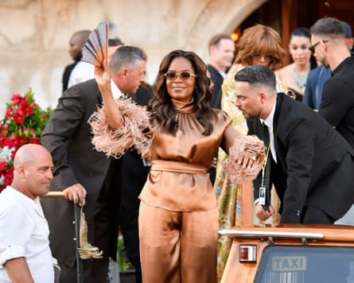

Newlyweds Amazon founder Jeff Bezos and journalist Lauren Sánchez left their luxury hotel on Venice’s Grand canal on Saturday for a final night of partying, crowning a three-day star-studded wedding extravaganza.
Bezos, 61, and Sanchez, 55, exchanged rings on Friday evening on the small island of San Giorgio, across the water from St Mark’s Square, accompanied by singing from Matteo Bocelli, son of Italian tenor Andrea Bocelli.
Bill Gates, Leonardo DiCaprio, Orlando Bloom, Tom Brady, Jordan’s Queen Rania, Oprah Winfrey, Kris Jenner and Kim and Khloé Kardashian, as well as Ivanka Trump and Jared Kushner, were among the A-listers present.
Saturday’s evening bash – wrapping up celebrations for 200-250 guests estimated to have cost $50m (£37m) – was due to take place in the Arsenale, a former medieval shipyard in an eastern district of the lagoon city.
Oprah Winfrey leaves her hotel for the final night of celebrations.Photograph: Luigi Costantini/AP
About 1,000 people marched against the event on Saturday, groups of activists and residents who objected to the wedding and to seeing Venice being gift-wrapped for the uber-wealthy.
Some guests were seen leaving the Gritti Palace hotel in central Venice wearing their pyjamas, sometimes beneath colourful dressing gowns, before boarding small boats to reach the party.
Bezos and Sánchez had a more sober style. He was sporting a black shirt and suit, while she wore a soft-pink off-the-shoulder dress. They kissed on the boat while greeting those around them.
At the ceremony the bride wore a high-necked silhouette dress and a tulle and lace veil by Dolce & Gabbana, which she told Vogue magazine was based on Sophia Loren’s dress to marry Cary Grant in the 1958 film, Houseboat.
Sánchez was also wearing a pair of diamond earrings by Dolce & Gabbana, which, according to Vogue, was lent to her in keeping with the tradition that it brings good luck for a bride to wear something borrowed.
Bezos, who is No 4 on Forbes’ global billionaires list, donned a black tuxedo and bow tie over a white shirt.
Friday’s ceremony had no legal status under Italian law, a senior city hall official told Reuters, suggesting the couple may have previously wed legally in the United States to avoid the bureaucracy associated with an Italian marriage.
While some residents and activists raged against Bezos as a symbol of inequality and arrogance, Venetian businesses and political leaders welcomed the luxury nuptials, hailing them as a major boost for the local economy.
“Those who protest are in contradiction with the history of Venice, which is a history of relations, contacts and business,” mayor Luigi Brugnaro told Reuters.
“Bezos embodies the Venetian mentality. He is more Venetian than the protesters,” said the centre-right mayor, adding that he hoped Bezos, who donated €3m (£2.5m) to local institutions, would return to the city to do business.
Brugnaro said Bezos had attached no conditions to holding his wedding celebrations in Venice, and city hall had only learned about his donations after they had been made.
Bezos, Amazon’s executive chair, got engaged to Sánchez in 2023, four years after the collapse of his 25-year marriage to novelist and philanthropist MacKenzie Scott.